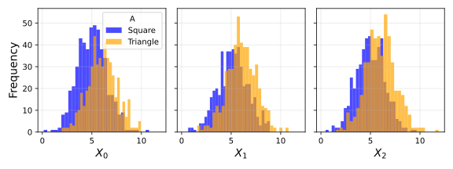
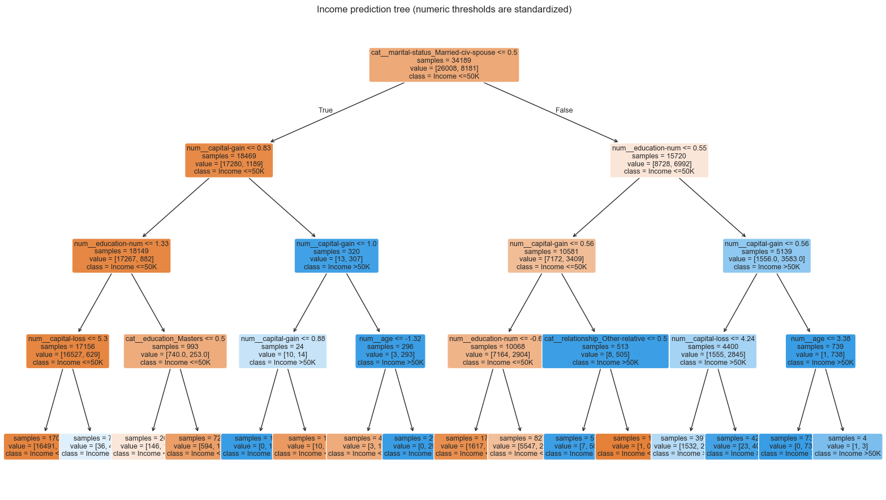
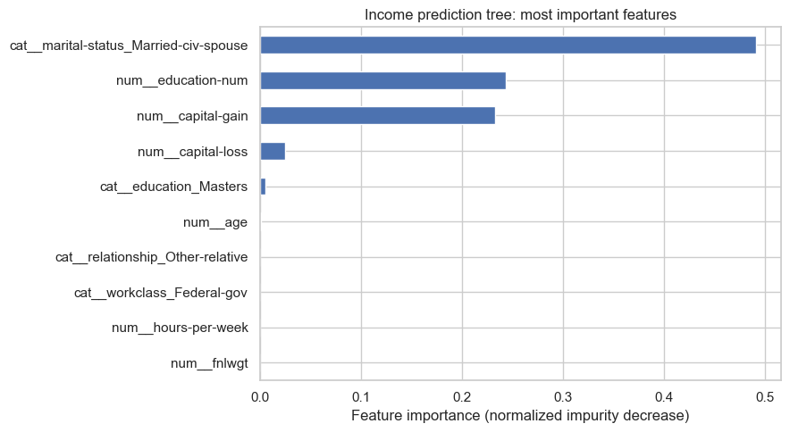
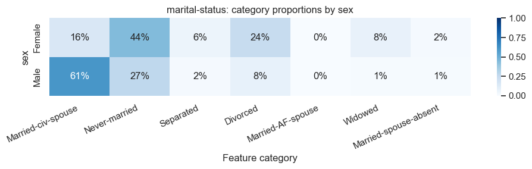

By 2015, it was clear that the system was not rating candidates in a gender-neutral way because it was built on data accumulated from CVs submitted to the firm mostly from males, Reuters claimed.
Task: an experimental tool scored candidates’ CVs to support recruiting.
What happened: The model favored male applicants. It penalized the term “women’s” and graduates of two women’s colleges.
Data-centric lesson: historical applicant data can encode exclusion, training CVs from a ten-year period were mostly from men.
Inequality Can Be in the Label
Before changing the model, ask whether the target contains inequality the model will learn to reproduce.
In CV screening, a model trained on historical shortlisting decisions may reproduce past exclusion.
Discuss: would removing names and gendered words be enough? What evidence would show that a CV score measures job-relevant ability?
Toy Example
\(X=\{X_0, X_1, X_2, \ldots\}\) is the set of input features (e.g., education, experience).
\(A\) is a sensitive group membership, shown as two shapes (e.g., gender).
Ground truth: \(Y=1\) means qualified for the job under a job-relevant assessment.
Model predictions: \(\hat{Y}=1\) means shortlisted for interview; \(\hat{Y}=0\) means not shortlisted.

A model can look accurate overall while one group lives in a different part of the feature space.
One group has a shifted score distribution because of external conditions such as unequal access to training or work experience.
Even a “shape-blind” model may infer group membership from correlated features.
Omitting \(A\) does not remove its influence.
Gender Shades
Gender Shades (2018): audit of three commercial systems that .
Automated systems are not inherently neutral. They reflect the priorities, preferences, and prejudices-the coded gaze-of those who have the power to mold artificial intelligence. Gender shades and Gender shades project
What happened: Error rates reached 34.7% for darker-skinned females, compared with a maximum of 0.8% for lighter-skinned males.
Data-centric lesson: audit intersections of group attributes (Gender Shades paper).
Discuss: should medical and loan requests use the same representation policy?
Why Different Treatment Happens
Different treatment usually does not require a programmer to intentionally encode racism or sexism.
But, the job of a ML algorithm is to learn discriminatory patterns from the data (e.g., how can I distinguish two classes?).
Problems? Think about what is the system trying to do, who is affected, and what should be checked before deployment?
the training set is not representative of the deployment population,
absence of data reflects historical exclusion,
small subgroup sample sizes do not generalize well,
labels encode previous biased decisions,
features include proxies for protected attributes,
and data quality differs across groups.
What Bias Is
A machine-learning system is biased when its data, modeling process, or deployment context creates systematically different errors, opportunities, or harms for different groups.
Data collection bias: who appears in the data, who is missing, and under what conditions measurements are made.
Algorithmic process bias: how features, objectives, thresholds, and validation metrics encode priorities.
Deployment bias: how predictions are interpreted and used by humans or institutions.
What Bias Is Not
Bias is not necessarily malicious. It can arise even when everyone involved has good intentions.
Bias is not one and done. A model may become unfair as populations, pipelines, policies, or deployment settings change.
Bias is not new. Researchers and practitioners have discussed discrimination, fairness, and measurement harms for decades.
From Headlines to a Fairness Audit
We now formalize these questions:
Data and proxies: who appears in the dataset, and which features encode group membership?
Targets: does the observed label measure the outcome we actually want?
Evaluation: which groups and intersections need separate metrics, and which errors matter most?
Interventions: does a proposed fix improve the intended behavior across realistic contexts?
What Is a Predicted Probability?
A predicted probability\(\hat{P}(Y=1\mid X)\) is the model’s estimate of how likely the positive outcome is, based on observed features \(X\).
\(D\) measures distance between prediction distributions; \(d\) is a task-relevant distance between people.
Statistical parity and equal opportunity
Statistical parity asks for equal positive prediction rates: \(P(\hat{Y} = 1 \mid A = a) = P(\hat{Y} = 1 \mid A = b)\)
Equal opportunity asks for equal true positive rates: \(P(\hat{Y} = 1 \mid Y = 1, A = a) = P(\hat{Y} = 1 \mid Y = 1, A = b)\)
Useful when missing qualified or truly positive cases is the central harm.
CV screening example: \(\hat{Y}=1\) means shortlisted for interview; \(Y=1\) means qualified for job position; \(A=gender\).
Statistical parity: shortlist 40 of 200 women and 20 of 100 men: both selection rates are 20%, regardless of qualification.
Equal opportunity: if 40 women and 60 men are qualified, shortlist 30 qualified women and 45 qualified men: both true positive rates are 75%.
The denominator is qualified applicants, not all applicants.
When Fairness Criteria Conflict
Each group has 100 CV applicants: 60 qualified applicants (\(Y=1\)) in A and 30 in B.
Circles \(Y=1\) and crosses \(Y=0\); orange rings mark shortlisted people (\(\hat{Y}=1\)).
Statistical parity: shortlist 40 applicants in each group. B has only 30 qualified applicants, so at least 10 shortlisted people in B must be unqualified.
Equal opportunity: shortlist 80% of qualified applicants in each group (48 in A, 24 in B); the overall shortlisting rates differ.
Fairlearn is an open-source Python toolkit for assessing and mitigating fairness issues in machine learning systems (Bird et al. 2020).
We start with auditing: MetricFrame organizes metrics overall and by group, much as a pandas DataFrame organizes tabular data.
Compare selection rates, TPR, and FPR across groups.
Summarize the largest group differences.
An audit measures disparities; it does not change the model.
For the CV example, y_test records qualification, y_pred records shortlisting, and A_test records group membership.
from fairlearn.metrics import MetricFrame, selection_rate, true_positive_ratemf = MetricFrame( metrics={"shortlist_rate": selection_rate, "qualified_recall": true_positive_rate}, y_true=y_test, y_pred=y_pred, sensitive_features=A_test,)mf.overall # metrics over all applicantsmf.by_group # the same metrics separately for each groupmf.difference() # largest minus smallest group value, per metric
The gap in shortlist_rate measures departure from statistical parity.
The gap in qualified_recall measures departure from equal opportunity.
MetricFrame assesses predictions; mitigation requires a separate transformer or estimator.
The Adult dataset is census-derived tabular data. The task is to predict whether annual income exceeds 50K USD.
Code
adult_df = load_cached_csv("https://archive.ics.uci.edu/static/public/2/data.csv", "adult.csv", na_values="?", skipinitialspace=True, # The dataset uses ? for missing values.)y_adult = adult_df.pop("income").str.rstrip(".").eq(">50K").astype(int)X_adult_raw = adult_df.copy() # Keep predictors separate from the income label.adult_df["income_gt_50k"] = y_adultadult_df.head()
age
workclass
fnlwgt
education
education-num
marital-status
occupation
relationship
race
sex
capital-gain
capital-loss
hours-per-week
native-country
income_gt_50k
0
39
State-gov
77516
Bachelors
13
Never-married
Adm-clerical
Not-in-family
White
Male
2174
0
40
United-States
0
1
50
Self-emp-not-inc
83311
Bachelors
13
Married-civ-spouse
Exec-managerial
Husband
White
Male
0
0
13
United-States
0
2
38
Private
215646
HS-grad
9
Divorced
Handlers-cleaners
Not-in-family
White
Male
0
0
40
United-States
0
3
53
Private
234721
11th
7
Married-civ-spouse
Handlers-cleaners
Husband
Black
Male
0
0
40
United-States
0
4
28
Private
338409
Bachelors
13
Married-civ-spouse
Prof-specialty
Wife
Black
Female
0
0
40
Cuba
0
Forget about fairness for a moment: how well can we predict income?
In a Jupyter environment, please rerun this cell to show the HTML representation or trust the notebook. On GitHub, the HTML representation is unable to render, please try loading this page with nbviewer.org.
Forget about fairness for a moment: how well can we predict income?
Code
baseline.fit(X_train, y_train)y_pred_raw = baseline.predict(X_test) # Save the original model's predictions.y_accuracy = balanced_accuracy_score(y_test, y_pred_raw)print("Balanced accuracy:", round(y_accuracy, 3))
Balanced accuracy: 0.741

Which features does the income prediction tree use?

Data-Centric Audit Questions: Which features might act as proxies for protected attributes?
Code
feature ="marital-status"# Change this to inspect another potential proxy.categories = bin_if_numeric(X_train[feature]).astype("string").fillna("Missing")category_metrics = { category: lambda yt, yp, value=category: np.mean(yp == value) # Remember this category.for category in categories.unique() # One proportion metric per category.}mf = MetricFrame( metrics=category_metrics, y_true=y_train, # Required by MetricFrame; these proportion metrics ignore it. y_pred=categories, # Here we measure feature categories, not income predictions. sensitive_features=X_train["sex"],)
Data-Centric Audit Questions: Which features might act as proxies?
Code
display(mf.by_group) # The same proportions, separately for women and men.
Married-civ-spouse
Never-married
Separated
Divorced
Married-AF-spouse
Widowed
Married-spouse-absent
sex
Female
0.156009
0.444878
0.057738
0.243636
0.001153
0.077960
0.018625
Male
0.609278
0.272628
0.018373
0.080518
0.000305
0.009077
0.009819
Code
display(mf.difference().max()) # Largest category-proportion gap between groups.
np.float64(0.45326930137115407)

Data-Centric Audit Questions: Compare Group Coverage and Label Rates
Let \(G=(A_{\mathrm{sex}}, A_{\mathrm{race}})\) identify each intersectional group \(g\). Apply the chosen criterion across all intersections, not separately to sex and race.
cr_X_train = add_sex_indicator(X_train, sex_train)cr_X_test = add_sex_indicator(X_test, sex_test)cr_tree_pipeline = Pipeline([ ("remove_correlation", CorrelationRemover(sensitive_feature_ids=[0], alpha=1)), ("model", clone(baseline["model"])), # A fresh tree with the baseline's settings.])cr_tree_pipeline.fit(cr_X_train, y_train)y_pred_cr_tree = cr_tree_pipeline.predict(cr_X_test)
accuracy
balanced_accuracy
balanced_accuracy_loss
demographic_parity_diff
equal_opportunity_diff
equalized_odds_diff
Before
0.844
0.741
0.259
0.160
0.094
0.094
After
0.844
0.734
0.266
0.145
0.068
0.068
Compare the equal-opportunity gap (equal_opportunity_diff); selection-rate and equalized-odds gaps are secondary diagnostics.
Interpretation: reducing linear correlation does not explicitly optimize TPR parity. The tree can still use nonlinear group information.
In-Processing: How ExponentiatedGradient Learns
The reductions method (Agarwal et al. 2018) wraps our ordinary tree learner in an optimization loop: converts fairness requirements into a sequence of cost-sensitive learning problems
Fit a candidate tree using the current example costs/weights.
Measure constraint violations: check group TPR among training rows with \(Y=1\).
Update penalties: exponentiated-gradient updates increase pressure on violated constraints, changing the costs for the next fit.
Repeat and combine: learn a weighted mixture of the candidate classifiers.
The result is a randomized mixture, not necessarily one tree.
Keep the fitted model fixed (its predict_proba output supplies a score \(s(X)\) for income above 50K), change the rule that turns this score into a label:
Gemini also generated German soldiers from World War Two, incorrectly featuring a black man and Asian woman. […] Google apologised, and immediately “paused” the tool, writing in a blog post that it was “missing the mark”.
Task: generate images of people from text prompts.
What happened: in February 2024, Gemini generated inaccurate historical depictions and refused ordinary prompts.
Google said diversity tuning ignored contexts where a wider range of people was inappropriate.
Ensure Coding Breaks 1 and 2 are complete, or run their worked solutions, then complete this coding block’s exercises.
Practice: Fairlearn on Adult, Now Auditing Race
Exercise 1: Inspect the Groups and Fit a Baseline
Inspect race groups and fit an unaware baseline.
Which groups have few examples? Why does an income-rate difference alone not establish a model error?
Code
# 1. Reuse X_train_raw, X_test_raw, y_train, and y_test; do not make a new split.# 2. Keep race separately for auditing, then remove sex and race from the predictors.# 3. Show training counts and observed high-income proportions for each race group.# 4. Fit an unaware depth-4 tree and save its test predictions.# Keep the protected attribute for auditing, separate from model inputs.# race_train, race_test = X_train_raw["race"], X_test_raw["race"]# display(race_train.value_counts())# display(pd.crosstab(race_train, y_train, normalize="index"))# X_race_train = X_train_raw.drop(columns=[...]) # Remove sex and race.# X_race_test = X_test_raw.drop(columns=[...]) # Remove the same columns.# race_baseline = make_tabular_pipeline(X_race_train, depth=4)# race_baseline.fit(..., ...) # Fit only on training predictors and labels.# pred_race_base = race_baseline.predict(...)
Exercise 2: Build and Read a MetricFrame
Audit the unaware baseline by race.
Which groups have the highest selection rate and missed-positive rate? Why do their denominators differ?
Code
# 1. Create a MetricFrame for the unaware tree, grouping test predictions by race.# 2. Inspect overall, by_group, and difference(). Use model_summary for the common summary.# 3. Calculate the equal-opportunity gap (TPR gap).# 4. Check the number of positive and negative test labels in each group before interpreting its error rates.# mf_race_base = MetricFrame(# metrics={"accuracy": accuracy_score, "balanced_accuracy": balanced_accuracy_score,# "selection_rate": selection_rate, "TP_rate": true_positive_rate,# "FP_rate": false_positive_rate, "FN_rate": false_negative_rate},# y_true=y_test, y_pred=..., sensitive_features=..., # Predictions and race_test.# )# display(mf_race_base.overall, mf_race_base.by_group)# gaps = mf_race_base.difference()# print("Equal-opportunity gap:", gaps[...]) # Largest minus smallest TPR.# print("Selection gap:", gaps["selection_rate"])# print("Equalized-odds gap:", gaps[["TP_rate", "FP_rate"]].max())# display(pd.crosstab(race_test, y_test)) # Error-rate denominators can be small.# display(pd.Series(model_summary(mf_race_base)))
Exercise 3: Pre-Processing with CorrelationRemover
Compare correlation removal with the unaware baseline.
Does reducing linear correlation improve the held-out equal-opportunity gap?
Code
# 1. One-hot encode race using training categories only. Do not assign ordinal numbers to race categories. Why?# 2. Adapt the sex example: prepend all race indicator columns to the baseline's numeric predictors.# 3. Pass their column positions to CorrelationRemover, then fit a fresh copy of the same tree.# 4. Audit the new predictions by race and compare with Exercise 2.# 5. Hint: if race has $k$ categories, the first $k$ columns are sensitive: list(range(k)).# race_encoder = OneHotEncoder(handle_unknown="ignore", sparse_output=False)# race_encoder.fit(race_train.to_frame()) # Learn categories only from training rows.# k = len(race_encoder.categories_[0])# def add_race_indicators(X, groups):# features = race_baseline["preprocess"].transform(X)# if hasattr(features, "toarray"):# features = features.toarray()# indicators = race_encoder.transform(groups.to_frame())# return np.column_stack([indicators, features]) # Race indicators come first.# race_pre = Pipeline([# ("remove", CorrelationRemover(sensitive_feature_ids=..., alpha=1)),# ("model", clone(race_baseline["model"])),# ])# race_pre.fit(add_race_indicators(..., ...), y_train)# pred_race_pre = race_pre.predict(add_race_indicators(..., ...))# mf_race_pre = group_metrics(y_test, pred_race_pre, race_test)
Exercise 4: In-Processing with ExponentiatedGradient
Train an in-processing model for equal opportunity.
Did the TPR gap improve? What happened to balanced accuracy, FPR, and selection rates?
Code
# 1. Start again from the unaware baseline, without applying Exercise 3's transformation.# 2. Train ExponentiatedGradient using TruePositiveRateParity() and race_train.# 3. Audit held-out predictions with group_metrics.# race_in = ExponentiatedGradient(# estimator=clone(race_baseline), constraints=...,# eps=0.02, max_iter=25,# sample_weight_name="model__sample_weight", # The pipeline's tree receives the weights.# )# race_in.fit(X_race_train, y_train, sensitive_features=...)# pred_race_in = race_in.predict(X_race_test, random_state=RANDOM_STATE)# mf_race_in = group_metrics(y_test, pred_race_in, race_test)# Code hint: compare model_summary(mf_race_base) with model_summary(mf_race_in).
Exercise 5: Post-Processing with ThresholdOptimizer
Learn a post-processing rule for equal opportunity.
Can improving TPR parity worsen other gaps? Why is prefit=True appropriate here?
Code
# 1. Keep Exercise 1's fitted unaware baseline and learn a new decision rule for equal opportunity.# 2. Supply race during both fit and predict.# 3. Audit the result; compare its TPR gap, balanced accuracy, and diagnostic gaps with the previous approaches.# race_post = ThresholdOptimizer(# estimator=race_baseline, prefit=True, # Keep the fitted baseline tree.# constraints=..., objective="balanced_accuracy_score", # Use "true_positive_rate_parity".# predict_method="predict_proba",# )# race_post.fit(X_race_train, y_train, sensitive_features=...) # Use training race values.# pred_race_post = race_post.predict(# X_race_test, sensitive_features=..., random_state=RANDOM_STATE,# ) # Use test race values; do not use test labels to learn thresholds.# mf_race_post = group_metrics(y_test, pred_race_post, race_test)
Exercise 6: Compare Five Approaches and Explain
Compare five approaches on fairness and predictive performance.
What changed from the sex audit? Which small-group estimates need caution, and why does the Pareto front not decide fairness?
Code
# 1. Compare raw, unaware, pre-processed, in-processed, and post-processed predictions by race, on the same test rows.# 2. Build a table with model_summary; plot equal-opportunity gap against balanced-accuracy loss (1 - balanced_accuracy).# 3. Reuse pareto_mask to highlight the non-dominated models; both plotted quantities should be minimized.# 4. Recommend one approach using the common equal-opportunity target and balanced accuracy; inspect the other gaps as diagnostics.# race_reports = {# "Raw (no fairness)": group_metrics(y_test, y_pred_raw, race_test),# "Unawareness": mf_race_base,# "Pre-processing": mf_race_pre,# "In-processing": mf_race_in,# "Post-processing": mf_race_post,# }# race_results = {}# for name, report in race_reports.items():# race_results[name] = model_summary(report)# race_comparison = pd.DataFrame(race_results).T.reset_index(names="model")# display(race_comparison.round(3))# x, y = "equal_opportunity_diff", "balanced_accuracy_loss"# race_comparison["pareto"] = pareto_mask(race_comparison[[x, y]])# front_race = race_comparison[race_comparison["pareto"]].sort_values(x)# Hint: copy the five-model scatter plot and replace comparison/front with these objects.# Label both axes "lower is better"; use equal-opportunity gap and balanced-accuracy loss.# Plot hints after completing race_comparison and front_race:# fig, ax = plt.subplots()# sns.scatterplot(data=race_comparison, x=x, y=y, hue="model", ax=ax)# ax.plot(front_race[x], front_race[y], "k--")# plt.show()
Closing Questions
Which groups are missing or poorly represented in this dataset?
Which point on the multi-objective frontier is acceptable for this domain, and who gets to decide?
Coding session 3 solution
Show the solution
race_post = ThresholdOptimizer( estimator=race_baseline, prefit=True, constraints="true_positive_rate_parity", objective="balanced_accuracy_score", predict_method="predict_proba",)race_post.fit(X_race_train, y_train, sensitive_features=race_train)pred_race_post = race_post.predict( X_race_test, sensitive_features=race_test, random_state=RANDOM_STATE,)mf_race_post = group_metrics(y_test, pred_race_post, race_test)race_reports = {"Raw (no fairness)": group_metrics(y_test, y_pred_raw, race_test),"Unawareness": mf_race_base,"Pre-processing": mf_race_pre,"In-processing": mf_race_in,"Post-processing": mf_race_post,}race_comparison = pd.DataFrame({ name: model_summary(report) for name, report in race_reports.items()}).T.reset_index(names="model")display(race_comparison.round(3))x, y ="equal_opportunity_diff", "balanced_accuracy_loss"race_comparison["pareto"] = pareto_mask(race_comparison[[x, y]])front_race = race_comparison[race_comparison["pareto"]].sort_values(x)fig, ax = plt.subplots(figsize=(8, 5))sns.scatterplot(data=race_comparison, x=x, y=y, hue="model", style="model", s=140, ax=ax)ax.plot(front_race[x], front_race[y], "k--", label="Pareto front")ax.scatter(front_race[x], front_race[y], s=320, facecolors="none", edgecolors="black")ax.set(xlabel="Equal-opportunity gap (lower is better)", ylabel="Balanced-accuracy loss (lower is better)", title="Adult: equal opportunity and performance by race")ax.legend(bbox_to_anchor=(1.02, 1), loc="upper left")plt.tight_layout()plt.show()
Agarwal, Alekh, Alina Beygelzimer, Miroslav Dudík, John Langford, and Hanna Wallach. 2018. “A Reductions Approach to Fair Classification.”Proceedings of the 35th International Conference on Machine Learning 80: 60–69. https://proceedings.mlr.press/v80/agarwal18a.html.
Borzsony, Stephan, Donald Kossmann, and Konrad Stocker. 2001. “The Skyline Operator.”Proceedings 17th International Conference on Data Engineering, 421–30.
Buolamwini, Joy, and Timnit Gebru. 2018. “Gender Shades: Intersectional Accuracy Disparities in Commercial Gender Classification.”Proceedings of the 1st Conference on Fairness, Accountability and Transparency 81: 77–91. https://proceedings.mlr.press/v81/buolamwini18a.html.
Chen, Irene Y. n.d. Bias and Fairness in Machine Learning. Lecture slides. other/bias_fairness.pdf.
Chouldechova, Alexandra. 2017. “Fair Prediction with Disparate Impact: A Study of Bias in Recidivism Prediction Instruments.”Big Data 5 (2): 153–63. https://doi.org/10.1089/big.2016.0047.
Dwork, Cynthia, Moritz Hardt, Toniann Pitassi, Omer Reingold, and Richard Zemel. 2012. “Fairness Through Awareness.”Proceedings of the 3rd Innovations in Theoretical Computer Science Conference, 214–26. https://doi.org/10.1145/2090236.2090255.
Fairlearn contributors. n.d. Fairlearn Documentation. Accessed October 22, 2026. https://fairlearn.org/.
Kleinberg, Jon, Sendhil Mullainathan, and Manish Raghavan. 2017. “Inherent Trade-Offs in the Fair Determination of Risk Scores.”8th Innovations in Theoretical Computer Science Conference (ITCS 2017), Leibniz international proceedings in informatics (LIPIcs), vol. 67: 43:1–23. https://doi.org/10.4230/LIPIcs.ITCS.2017.43.
Zemel, Rich, Yu Wu, Kevin Swersky, Toni Pitassi, and Cynthia Dwork. 2013. “Learning Fair Representations.”Proceedings of the 30th International Conference on Machine Learning 28: 325–33. https://proceedings.mlr.press/v28/zemel13.html.